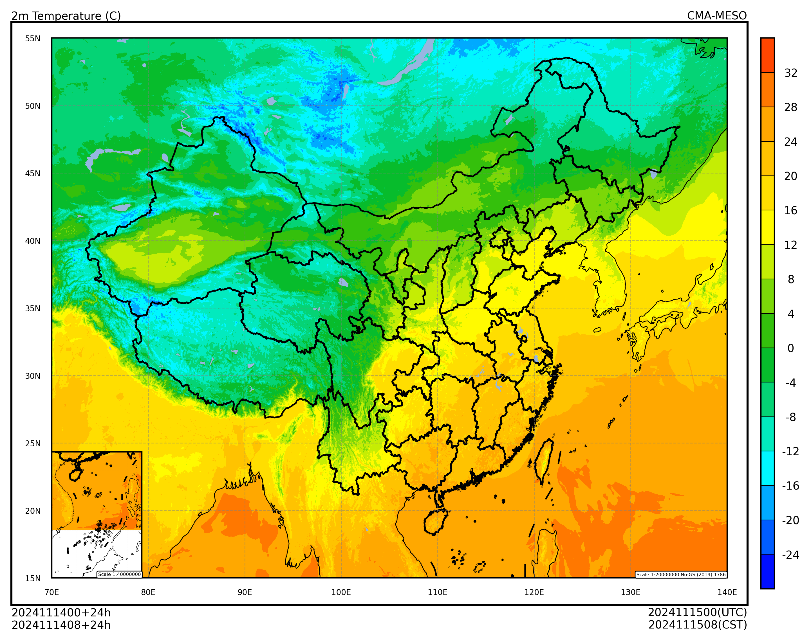

天擎大数据云平台#
天擎大数据云平台 CMADaaS 使用 MUSIC 接口用于检索数据，提供包括 Python 在内的多种编程语言 SDK，详情请访问天擎门户网站 开发SDK 栏目。
因天擎 MUSIC SDK 仅内网使用，本文介绍仿照 MUSIC SDK 重新实现的 MUSIC Python 接口库 nuwe-cmadaas-python。
安装#
nuwe-cmadaas-python 库尚未发布到 PYPI 中，请从 GitHub 项目库中下载最新代码并使用 pip 安装。 仓库地址: perillaroc/nuwe-cmadaas-python
git clone https://github.com/perillaroc/nuwe-cmadaas-python.git
cd nuwe-cmadaas-python
pip install .
配置#
天擎平台检索数据需要准备账户，并申请资料的访问权限。
创建配置文件 ~/.config/cedarkit.yaml，配置访问天擎的服务器信息、账户名和密码，类似：
cmadaas:
auth:
user: user name
password: user password
server:
music_server: music server ip
music_port: music server port
music_connTimeout: 3 # connection time out, seconds
music_readTimeout: 3000 # read time out, seconds
music_ServiceId: music service id
详细配置参数信息请查看天擎 MUSIC SDK 示例文件。
准备#
导入需要的包
import xarray as xr
import pandas as pd
from nuwe_cmadaas.model import retrieve_model_grid
设置绘图的数据参数，使用 CMA-MESO 2024 年 11 月 14 日 00 时次 024 时效数据。
天擎数据条目使用“中国气象局区域模式CMA-MESO原始分辨率预报产品（0.03×0.03）”，数据编码“NAFP_GRAPES_MESO_FOR_3KM”。
system_name = "CMA-MESO"
start_time = pd.to_datetime("2024-11-14 00:00:00")
forecast_time = pd.to_timedelta("24h")
CMADAAS_DATA_ID = "NAFP_GRAPES_MESO_FOR_3KM"
加载数据#
加载 2 米温度场
参数解释：
paramter="TEM"：气温level_type=103：特定高度层（地面以上），单位米level=2：2 米
更详细的数据说明请访问天擎门户网站的数据条目。
t_2m_field = retrieve_model_grid(
CMADAAS_DATA_ID,
start_time=start_time,
forecast_time=forecast_time,
parameter="TEM",
level_type=103,
level=2,
) - 273.15
t_2m_field
<xarray.DataArray '' (latitude: 1671, longitude: 2501)> Size: 33MB
array([[ 27.04400024, 27.05800781, 27.05098877, ..., 27.54900513,
27.57198486, 27.66100464],
[ 27.0960022 , 27.05098877, 27.06798706, ..., 27.57601318,
27.57198486, 27.66100464],
[ 27.06200562, 27.07299194, 27.06798706, ..., 27.54299316,
27.55001221, 27.65899048],
...,
[ -6.43500366, -6.69699707, -5.9329895 , ..., -21.05498352,
-21.48097839, -20.02599182],
[ -6.62601318, -6.78101196, -6.38400879, ..., -21.55898132,
-21.51698914, -20.27397766],
[-19.79797974, -19.87097778, -19.94298401, ..., -20.50598755,
-19.98699036, -19.9599823 ]])
Coordinates:
* latitude (latitude) float64 13kB 10.0 10.03 10.06 ... 60.04 60.07 60.1
* longitude (longitude) float64 20kB 70.0 70.03 70.06 ... 144.9 145.0 145.0绘图#
使用 cedarkit-maps 绘制 2 米温度填充图
Show code cell source
from cedarkit.maps.style import ContourStyle
from cedarkit.maps.chart import Panel
from cedarkit.maps.domains import EastAsiaMapTemplate
from cedarkit.maps.colormap import get_ncl_colormap
t_2m_level = [-24, -20, -16, -12, -8, -4, 0, 4, 8, 12, 16, 20, 24, 28, 32]
color_index = [2, 12, 22, 32, 42, 52, 62, 72, 82, 92, 102, 112, 122, 132, 142, 152]
t_2m_color_map = get_ncl_colormap("BlAqGrYeOrReVi200", index=color_index)
t_2m_style = ContourStyle(
colors=t_2m_color_map,
levels=t_2m_level,
fill=True,
)
domain = EastAsiaMapTemplate()
panel = Panel(domain=domain)
panel.plot(t_2m_field, style=t_2m_style)
domain.set_title(
panel=panel,
graph_name="2m Temperature (C)",
system_name=system_name,
start_time=start_time,
forecast_time=forecast_time,
)
domain.add_colorbar(panel=panel, style=t_2m_style)
panel.show()
